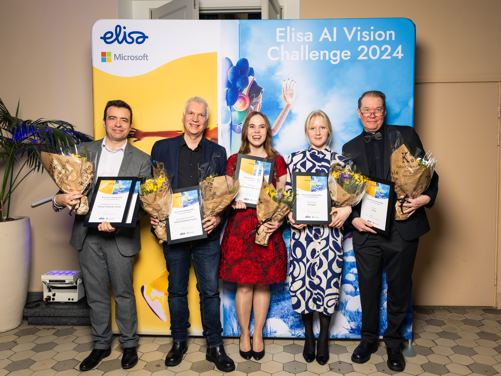

Designing systems where a person can have an AI-enabled layer for knowledge, communication, memory, and interaction.
This work explores how a person can have an AI-enabled layer that represents knowledge, communication, memory, and interaction over time. The core question is not just how to build a chatbot, but how to design a system that feels meaningfully connected to a real person and useful across different contexts.
The best way to understand this work is to experience it directly. My own AI Twin is publicly accessible — it represents my thinking, background, and areas of focus, and can answer questions about my work, approach, and experience.
Most AI systems are generic. They respond, but they do not carry real continuity, personal structure, or a deeper relationship to identity and long-term knowledge. If personal AI is going to matter, it needs more than a prompt box. It needs a stronger foundation for ownership, context, memory, and interaction.
These systems explore how individuals can shape their own AI layer for public interaction, private assistance, knowledge organization, and longer-term representation. The work includes both conceptual architecture and practical product thinking around how such systems should behave, evolve, and remain useful over time.
Examples of the kinds of problems this work addresses:
My contribution has included product architecture, UX direction, concept design, system logic, documentation, feature definition, and iterative prototyping. I have worked especially on connecting abstract ideas around personal AI into clearer product structures and user journeys.
The key product challenge is making personal AI feel trustworthy, coherent, and personally meaningful. A personal AI should not feel like a generic assistant with a name attached to it. It should reflect a deeper logic around what the person wants it to represent, what it should help with, and how it should evolve.
This also means thinking carefully about:
This work requires careful thinking around:
A core principle is that personal AI is not only a model problem. It is also an identity problem, a memory problem, a UX problem, and an architecture problem.
This area continues to interest me because it combines human-centered design, system architecture, AI interaction, and long-term product thinking in a way that few product categories currently do.
An overview of what it means to live and work with your own personal AI — identity, memory, and the future of AI representation.
An earlier preview version of personal AI — shared in this podcast episode — shows the foundational thinking around personal data ownership and control that informs the current direction. The episode is from Privacy in Your Hands: Exploring the Power of Prifina, hosted by Michael Becker.
A weekly newsletter exploring how a personal AI twin can simplify your life, streamline tasks, and enhance communication — at work and beyond. Topics include practical implementation, conceptual distinctions, positioning in the agentic AI world, and how personal AI evolves as a real system rather than a generic assistant.
In 2024, work in this space was recognised at the Elisa AI Vision Challenge, a national competition advancing AI adoption in Finland, partnered with Microsoft. The challenge focuses on reimagining how AI can transform customer interactions and organisational collaboration — directly aligned with the thinking behind personal AI and AI twin systems.

Photo © Henni Hyvärinen / Elisa AI Vision Challenge 2024
An earlier foundation for this work is Prifina — a platform that moves personal data from corporate servers into individual data clouds owned by the user. Apps access data on-demand without retaining it, giving individuals a real-time and holistic view of their own data while allowing developers to build privacy-respecting applications without data management overhead. Covered as a case study by Sitra, the Finnish Innovation Fund.
The latest full personal AI system — covering knowledge structure, memory, private and public interaction layers, and long-term continuity — is currently in active development. It is not publicly documented, but can be shared privately upon request for relevant conversations around collaboration, product roles, or advisory work.